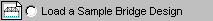
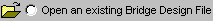

How to design a bridge
How to design a bridge
How to design a bridge
 Go forward one step
Go forward one step
Every time you start up the Bridge Designer 2016, the Welcome dialog box will offer you the following three options:


Select the Create a New Bridge Design option, and click OK. The Design Project Setup Wizard will be displayed. First, review the Design Requirement and familiarize with the project site, as displayed in the Preview window. Click the Next button and enter your Local Contest Code, if you are participating in a local bridge design contest.
If you enter a valid Local Contest Code, the associated site configuration and load case will be automatically set up for you on the Drawing Board. If you do not enter a Local Contest Code, you may choose from 98 available site configurations and four available load cases. Click the Next button again to make these selections.
The site configuration consists of:
Each of these selections affects the , which is displayed near the bottom of the Design Project Setup Wizard, along with the corresponding calculations.
Once you have made your selections, click the Next button to select the load case.
The load case consists of:
Once you have made your selections, you may click the Finish button to complete the design project setup and activate the Drawing Board.
Once the program is running, the only way to change the site configuration or load case is to start a new design. Clicking the will display the Design Project Setup Wizard.
There are 98 possible site configurations, consisting of various combinations of deck elevation, support type, and support height. There are four possible load cases, consisting of combinations of the two available deck materials and two available truck loadings. Overall, then, BD 2016 offers 392 possible design projects. Each project represents a different type of support or loading, and each one has a different cost--but all 392 are consistent with the design specifications.
The total cost of the bridge equals the site cost plus the truss cost. Each site configuration has a different cost, and the site cost makes up a substantial portion of the total cost of the bridge. But picking the configuration with the lowest site cost will not necessarily result in the lowest total cost. In general, site configurations that have a low site cost tend to have a relatively high truss cost and vice versa.
A site configuration with a high deck elevation will generally have a relatively low site cost, because a higher deck requires little or no excavation. But a configuration with a high deck elevation also has a greater length. A longer span requires a larger, heavier truss, which results in a higher truss cost.
Arch abutments cost more than , and tall arch abutments cost more than short ones. Thus site configurations that use arches tend to have higher site cost. But because of the V-shape of the river valley, arch abutments also reduce the span length (for a given deck height)--the taller the , the shorter the span. Arch abutments also provide more lateral restraint than standard abutments. Both of these factors tend to cause the truss cost to be less for arches.
Building a pier in the middle of a river can be quite expensive. Thus configurations with have significantly higher site costs than those without piers. But the pier also divides one long span into two short ones, and two short trusses are usually much less expensive than a single long one.
Cable anchorages are also expensive, but they provide for additional support (e.g., the cable supports of a cable-stayed bridge) and thus can reduce the truss cost significantly.
The choice of deck material affects both the site cost and the loads applied during the Load Test. Medium-strength concrete is less expensive than high-strength concrete but results in a thicker deck, which is heavier. High-strength concrete is more expensive but results in a thinner deck, which is lighter. Thus the less expensive deck material tends to result in a higher truss cost, while the more expensive deck material results in a lower truss cost.
Your choice of truck loading has no effect on the site cost but will have a significant effect on the truss cost.
Engineering design always involves tradeoffs, and the tradeoff between the cost of a structure and the cost of its supporting is a critically important aspect of most real-world bridge designs.
So which site configuration and load case will result in the lowest total cost? For now, don't worry about it. Just take your best guess and move on to the next step in the design process. We'll try to find the optimum site configuration later in the process.